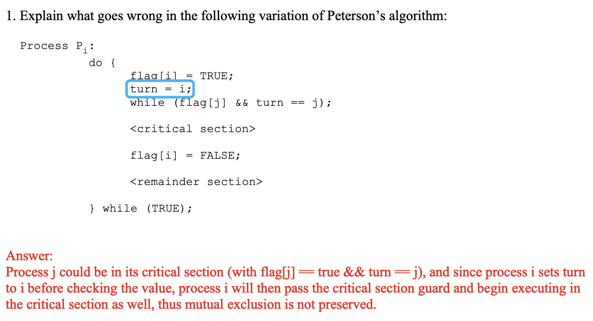

6 Synchronization
Intro¶
#include <stdio.h>
#include <stdlib.h>
#include <pthread.h>
int counter = 0;
static int loops = 1e7;
// pthread_mutex_t pmutex = PTHREAD_MUTEX_INITIALIZER;
void* worker(void* arg) {
int i;
printf("%s: begin\n", (char*)arg);
for (i = 0; i < loops; i++) {
// pthread_mutex_lock(&pmutex);
counter++;
// pthread_mutex_unlock(&pmutex);
}
printf("%s: done\n", (char*)arg);
return NULL;
}
int main() {
pthread_t p1, p2;
printf("main: begin (counter = %d)\n", counter);
pthread_create(&p1, NULL, worker, "A");
pthread_create(&p2, NULL, worker, "B");
pthread_join(p1, NULL);
pthread_join(p2, NULL);
printf("main: done with both (counter = %d)\n", counter);
return 0;
}
在我们的预期中，上面的程序应当是两个线程 p1 p2 一起数数，每个人数 1e6 次，共 2e6 次；但是实际运行结果如下：
$ gcc example.c -o tmpC && ./tmpC
main: begin (counter = 0)
A: begin
B: begin
B: done
A: done
main: done with both (counter = 1034720)
counter++; 是一条 C 语言语句，但是需要多条汇编指令（取决于 ISA）；如果 p1 执行某条指令时，被 interrupt 或者 p2 读取了 counter 的值（此时 p1 还没有将计算的结果写回）；那么不知不觉中，数的次数就偏少了，这称为 Race Condition。
Race Condition
Several processes (or threads) access and manipulate the same data concurrently and the outcome of the execution depends on the particular order in which the access takes place, is called a race-condition.
为此，引入 critical section。
Critical section¶
Problem¶
Each process has a critical section segment of code (E.g., to change common variables, update table, write file, etc.)
// An example is presented in the comments to the code above
while (true) {
// entry section
/* critical section */
// exit section
/* remainder section */
}
- Only one process can be in the critical section
- Each process must ask permission to enter critical section in entry section
- The permission should be released in exit section
- The remaining code is the remainder section
solution¶
What about Preventing interrupts? - Single-core system: works well - Multiple-processor system: not feasible
Three Requirements for Solutions¶
- Mutual Exclusion
- Only one process can execute in the critical section.
- Progress
- No deadlock (there must a progress in critical section unless no progress wish to enter its critical section).
- Bounded waiting
- No starvation (every progress has chance to enter its critical section).
Peterson's solution¶
Peterson’s solution solves two-processes synchronization, and only works for two processes case.
It assumes that LOAD and STORE are atomic (execution can't be interrupted, but it usually can't be guaranteed by hardware automatically).
So the two processes share two variables: - boolean flag[2]: whether a process is ready to enter the critical section - int turn: whose turn it is to enter the critical section

We can prove that Peterson's solution satisfies the three requirements of the solution.
Useless
Although useful for demonstrating an algorithm, Peterson’s solution is not guaranteed to work on modern architectures. (Since it requires too much, sometimes be wrong and works only for two.)
https://www.cs.cornell.edu/courses/cs414/2007sp/homework/hw2_soln.pdf 
Hardware Support for synchronization¶
Uniprocessors: disable interrupts
Memory barriers (memory fences)¶
Memory models are the memory guarantees a computer architecture makes to application programs. They are either Strongly ordered or Weakly ordered.
A memory barrier is an instruction that forces any change in memory to be propagated (made visible) to all other processors.
Four basic varieties of memory barriers in linux: - Write (or store) memory barriers - Address-dependency barriers (historical) - Read (or load) memory barriers - General memory barriers - Implicit varieties: - ACQUIRE operations - RELEASE operations
Explicit/Implicit Memory Barriers in Linux: TODO, may be not important.
Hardware Instructions¶
Special hardware instructions that allow us to either test-and modify the contentof a word, or to swap the contents of two words atomically (uninterruptable)
test_and_set (TAS)¶
// The function is atomically; it is just one instruction
bool test_and_set(bool* target) { // passed parameter (pp)
bool rv = *target;
*target = true; // set the new value of pp to true
return rv; // return the original value of pp, ensure if target is used, another thread can jump out `while();` that is, another thread is busying waiting.
}
void use_lock() {
bool lock = true;
do {
while (test_and_set(&lock)); // get lock if lock is not used; else do nothing
/* critical section */
lock = false; // release lock
/* remainder section */
} while (true);
}
compare_and_swap (CAS)¶
// The function is atomically
int compare_and_swap(int* value, int expected, int new_value) {
int temp = *value;
if (*value == expected) // swap happens only under this condition
*value = new_value;
return temp; // return the original value of passed *value
}
void use_lock() {
int lock = 0;
while (true) {
while (compare_and_swap(&lock, 0, 1) == 0); // get lock if lock is not used; else do nothing
/* critical section */
lock = 0;
/* remainder section */
}
}
in practice:
- x86
- lock cmpxchg <destination operand>, <source operand>
- arm
- LDREX and STREX instructions used together
- to implement atomic operations the programmer must retry the operation (both LDREX and STREX) until the exclusive monitor signals a success.
Atomic Variables¶
One tool is an atomic variable that provides atomic (uninterruptible) updates on basic data types such as integers and booleans.
- For example, the increment() operation on the atomic variable sequence ensures sequence is incremented without interruption: increment(&sequence);;
Mutex Lock (spinlock)¶
Mutex locks protect a critical section by first acquire() a lock then release() the lock; calls to acquire() and release() must be atomic. These two functions can be implement using test_and_set or compare_and_swap.
static bool available = false;
void acquire() {
while (!available); // busy wait
available = false;
}
void release() {
available = true;
}
while (true) {
acquire lock
critical section
release lock
remainder section
}
In computer science and software engineering, busy-waiting, busy-looping or spinning is a technique in which a process repeatedly checks to see if a condition is true, such as whether keyboard input or a lock is available. Spinning can also be used to generate an arbitrary time delay, a technique that was necessary on systems that lacked a method of waiting a specific length of time. Processor speeds vary greatly from computer to computer, especially as some processors are designed to dynamically adjust speed based on current workload.[1] Consequently, spinning as a time-delay technique can produce inconsistent or even unpredictable results on different systems unless code is included to determine the time a processor takes to execute a "do nothing" loop, or the looping code explicitly checks a real-time clock.
This solution requires busy waiting; so called a spinlock . In certain circumstances on multicore systems, spinlocks are in fact the preferable choice for locking.
What if we have N threads? - N-1 threads loops in all their CPU time - A huge waste of CPU time and power
To avoid wasting, it can just yield:
bool flag = 0;
void lock() {
while (test_and_set(&flag, 1) == 1)
yield(); // give up the cpu
}
void unlock() {
flag = 0;
}
Semaphore¶
- semaphore stands for how many resources we can use.
- Counting semaphore – integer value can range over an unrestricted domain
- Binary semaphore – integer value can range only between 0 and 1
- Same as a mutex lock
Semaphore w/ waiting queue:¶
w/是with的意思
typedef struct {
int value;
struct list_head* wating_queue;
} semaphore;
void wait(semaphore* s) {
s->value--;
if (s->value < 0) {
// add this process to s->waiting_queue
block(); //place the process invoking the operation on the appropriate waiting queue
}
};
void signal(semaphore* s) {
s->value++;
if (s->value <= 0) {
// reomve a process P from s->waiting_queue
wakeup(P); // remove one of processes in the waiting queue and place it in the ready queue
}
}
Busy waiting changes:

typedef struct __lock_t {
int flag; // 0 means not locked
int guard; // 0 means not available to flag
queue_t* q;
} lock_t;
void lock_init(lock_t* m) {
m->flag = 0;
m->guard = 0;
queue_init(m->q);
}
void lock(lock_t* m) {
while (test_and_set(&m->guard, 1) == 1)
; //acquire guard lock by spinning
if (m->flag == 0) {
m->flag = 1; //lock is acquired
m->guard = 0;
} else {
queue_add(m->q, gettid());
m->guard = 0; //
park(); // release the processor
}
}
void unlock(lock_t* m) {
while (test_and_set(&m->guard, 1) == 1)
; //acquire guard lock by spinning
if (queue_empty(m->q))
m->flag = 0;
else
wakeup(queue_remove(m->q));
m->guard = 0;
}
- m->guard 的作用是：保护 m->flag
- 14-15 行的实现了：spinLock
- 为什么不能够互换 21/22 行：执行到 21/22 行时，说明 guard = 1；互换后执行到
park()时，该线程将 “拿着 lock 去 sleep”；m->guard 永远为 1，其他线程一旦进入lock()就无法跳出 14 行循环。（课上记的，好像有点问题？）
mutex vs. semaphore¶
- mutex(spinLock)
- pros: no blocking
- cons: waste CPU time on looping
- Good for short critical section.
- semaphore
- pros: no looping
- cons: context switch is time-consuming
- Good for long cirtical section
长和短是相对 context switch 的长度而言的。
deadlock and starvation¶
- Deadlock: two or more processes are waiting indefinitely for an event that can be caused by only one of the waiting processes
- Starvation: indefinite blocking; a process may never be removed from the semaphore’s waiting queue
Priority Inversion¶
a higher priority process is indirectly preempted by a lower priority task.
example¶
- three processes, PL, PM, and PH with priority PL < PM < PH
- PL holds a lock that was requested by PH ➱ PH is blocked
- PM becomes ready and preempted the PL
- It effectively "inverts" the relative priorities of PM and PH
solution¶
priority inheritance: temporary assign the highest priority of waiting process (PH) to the process holding the lock (PL)
reader-writer block (todo)¶
Examples¶
Bounded-Buffer Problem¶
description¶
- Two processes, the producer and the consumer share n buffers
- the producer generates data, puts it into the buffer
- the consumer consumes data by removing it from the buffer
- The problem is to make sure:
- the producer won’t try to add data into the buffer if it is full
- the consumer won’t try to remove data from an empty buffer
- aka producer-consumer problem
solution¶
- n buffers, each can hold one item
- semaphore mutex initialized to the value 1
- semaphore full-slots initialized to the value 0
- semaphore empty-slots initialized to the value N
/* The producer process: */
do {
//produce an item
…
wait(empty-slots);
wait(mutex);
//add the item to the buffer
…
signal(mutex);
signal(full-slots);
} while (TRUE)
/* The consumer process: */
do {
wait(full-slots);
wait(mutex);
//remove an item from buffer
…
signal(mutex);
signal(empty-slots);
//consume the item
…
} while (TRUE);
Readers-Writers Problem¶
description¶
• A data set is shared among a number of concurrent processes • readers: only read the data set; they do not perform any updates • writers: can both read and write • The readers-writers problem: • allow multiple readers to read at the same time (shared access) • only one single writer can access the shared data (exclusive access)
solution¶
• semaphore mutex initialized to 1 • semaphore write initialized to 1 • integer readcount initialized to 0
/* The writer process */
do {
wait(write);
//write the shared data
…
signal(write);
} while (TRUE);
/* The structure of a reader process */
do {
wait(mutex);
readcount++;
if (readcount == 1) //first reader
wait(write); //block write
signal(mutex)
//reading data
…
wait(mutex);
readcount--;
if (readcount == 0)
signal(write);
signal(mutex);
} while (TRUE);
Dining-Philosophers Problem (to learn)¶
description¶
- Philosophers spend their lives thinking and eating
- They sit in a round table, but don’t interact with each other
- They occasionally try to pick up 2 chopsticks (one at a time) to eat
- One chopstick between each adjacent two philosophers
- Need both chopsticks to eat, then release both when done
- Dining-philosopher problem represents multi-resource synchronization
solution¶
Semaphore chopstick[5] initialized to 1.
For more exercise: https://www.cs.cornell.edu/courses/cs414/2007sp/homework/hw2_soln.pdf
Linux Synchronization (Todo)¶
Deadlock¶
Deadlock problem¶
Deadlock
a set of blocked processes each holding a resource and waiting to acquire a resource held by another process in the set
In concurrent computing, deadlock is any situation in which no member of some group of entities can proceed because each waits for another member, including itself, to take action, such as sending a message or, more commonly, releasing a lock.
pthread_mutex_t first_mutex;
pthread_mutex_t second_mutex;
void deadLock_init() {
pthread_mutex_init(&first_mutex, NULL);
pthread_mutex_init(&second_mutex, NULL);
}
void* do_work_one() {
pthread_mutex_lock(&first_mutex);
pthread_mutex_lock(&second_mutex);
// do work
pthread_mutex_unlock(&second_mutex);
pthread_mutex_unlock(&first_mutex);
pthread_exit(0);
}
void* do_work_two() {
pthread_mutex_lock(&second_mutex);
pthread_mutex_lock(&first_mutex);
// do work
pthread_mutex_unlock(&first_mutex);
pthread_mutex_unlock(&second_mutex);
pthread_exit(0);
}

System model¶
Resource-Allocation Graph¶
- Two types of nodes:
- P = {P1, P2, …, Pn}, the set of all the processes in the system
- R = {R1, R2, …, Rm}, the set of all resource types in the system
- Two types of edges:
- Request edge: directed edge Pi ➞ Rj
- Pi has requested an instance of resource type Rj and is currently waiting for that resource.
- Assignment edge: directed edge Rj ➞ Pi
- An instance of resource type Rj has been allocated to thread Pi
- Request edge: directed edge Pi ➞ Rj
- legend

Example
-
dead Lock
-
no dead Lock
Help
一个 resource 只要有一个 instance 是空闲的，就可以被分配。
Summary
-
If graph contains no cycles ➠ no deadlock
-
If graph contains a cycle
- If only one instance per resource type ➠ deadlock
- If several instances per resource type ➠ possibility of deadlock
Four Conditions of Deadlock¶
- Mutual exclusion: only one process at a time can use a resource
- Hold and wait: a process holding at least one resource is waiting to acquire additional resources held by other processes
- No preemption: a resource can be released only voluntarily by the process holding it, after it has completed its task
- Circular wait: there exists a set of waiting processes {P0, P1, …, Pn}
- P0 is waiting for a resource that is held by P1
- P1 is waiting for a resource that is held by P2 …
- Pn–1 is waiting for a resource that is held by Pn
- Pn is waiting for a resource that is held by P0
Handling deadlocks¶
Deadlock prevention¶
- How to prevent mutual exclusion
- Not required for sharable resources
- Must hold for non-sharable resources
- In general, however, we cannot prevent deadlocks by denying the mutual-exclusion condition, because some resources are intrinsically non-sharable.
- How to prevent hold and wait
- Whenever a process requests a resource, it doesn’t hold any other resources
- Require process to request all its resources before it begins execution
- Allow process to request resources only when the process has none
- Low resource utilization; starvation possible
- Whenever a process requests a resource, it doesn’t hold any other resources
- How to handle no preemption
- If a process requests a resource not available
- All resources the process is currently holding are preempted (Preempted resources are added to the list of resources it waits for)
- Process will be restarted only when it can get all waiting resources
- If a process requests a resource not available
- How to handle circular wait
- Impose a total ordering of all resource types (Require that each process requests resources in an increasing order)
- Many operating systems adopt this strategy for some locks.
- But fail to handle dynamic acquired lock.
Deadlock avoidance¶
Deadlock avoidance: require extra information about how resources are to be requested. (not practical)
Resource-allocation state: - The number of available and allocated resources - The maximum demands of the processes
safe state¶
- There exists a sequence
- For each Pi, resources that Pi can still request can be satisfied by currently available resources + resources held by all the Pj (j < i)
- Safe state can guarantee no deadlock

Example
- 下图的上半部分的情况是 safe 的，因为 Available 资源足够执行 P1，P1 释放后可以执行 P0 -> P2

- 上图下半部分的情况是 unsafe 的，因为执行 P1 后不足以执行 P0。
Banker's algorithm¶
- Single instance of each resource type ➠ use resource-allocation graph (if cycle)
-
Multiple instances of a resource type ➠ use the banker’s algorithm
-
Banker’s algorithm is for multiple-instance resource deadlock avoidance
- Each process must claim maximum use of each resource type in advance
- When a process requests a resource it may have to wait
- When a process gets all its resources it must release them in a finite amount of time
-
n processes, m types of resources
- available: an array of length m, instances of available resource
- available[j] = k: k instances of resource type Rj available
- max:
n*mmatrix- max [i,j] = k: process Pi may request at most k instances of resource Rj
- allocation:
n*mmatrix- allocation[i,j] = k: Pi is currently allocated k instances of Rj
- need:
n*mmatrix- need[i,j] = k: Pi may need k more instances of Rj to complete its task
- need [i,j] = max[i,j] – allocation [i,j]
- available: an array of length m, instances of available resource
Example
题目本身只会给我们 system state 和 allocation, max 向量/矩阵。

我们需要做的也很简单：
- 计算 need 矩阵和 available 向量。
- 观察 available 向量能否满足某一个进程 Pi 对应的 need 向量（在上面的例子中，P3 可以都满足），执行下一步；如果都不能，则处于 unsafe state，结束。
- 将 Pi 的 allocation 向量加到 available 上，并将其排除出矩阵；再次执行步骤 2，直到 need 为空。
https://www.cs.cornell.edu/courses/cs414/2007sp/homework/hw2_soln.pdf

Deadlock detection¶
Single Instance Resources (Wait-for Graph)¶
find a cycle:

Multi-instance Resources¶
Just like Banker's algorithm.
Deadlock recovery¶
- Terminate deadlocked processes. options:
- Abort all deadlocked processes
- Abort one process at a time until the deadlock cycle is eliminated
- Resource preemption
- Select a victim
- Rollback
- Starvation